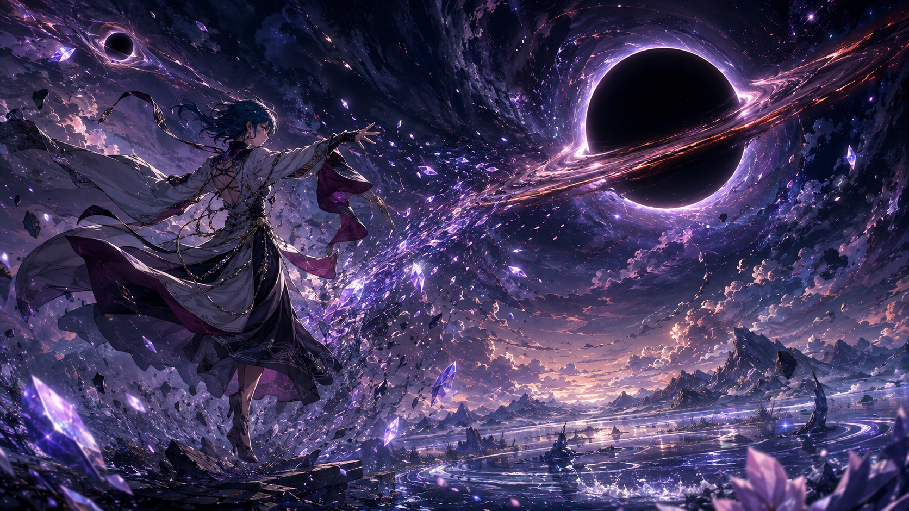

作品

Flux — Between Worlds
FX・VFXとアニメ風背景アートへの関心を、一つの風景として表現した作品です。 雨上がりの海辺の都市を舞台に、青い流体のような光と金色の粒子が 空へ立ち上る情景を描いています。 静かな街並みと動きのあるエフェクトを組み合わせ、 現実と想像の境界に立つような感覚を目指しました。
制作にはChatGPTの画像生成機能を使用しました。 私が伝えた活動分野や興味をもとに、ChatGPTが生成用プロンプトを構成し、 画像を生成しています。手描き作品や実際のFXシミュレーションではなく、 今後の表現を探るためのAI生成コンセプトアートです。
使ったプロンプト（英語）
Create one polished landscape portfolio artwork for Duan-Flux747, an FX/VFX artist learning AI who also draws anime-style backgrounds. Original cinematic environment concept art, 16:9 wide.
A rain-soaked elevated terrace overlooking an intricately painted Japanese-inspired futuristic coastal city at blue hour, distant mountains and luminous clouds.
Central visual focal point: an elegant vast spiral of turquoise fluid-like energy and warm amber embers sweeping from the foreground toward the sky, with convincing volumetric smoke, fine particle trails, refractive water droplets, physically coherent reflected lighting on wet stone, controlled layered VFX detail.
A tiny anonymous artist silhouette on the terrace gives scale, not a portrait.
Subtle geometric light filaments within the energy suggest computational creativity and AI, organically integrated, no interface overlays.
Beautiful hand-painted anime background craftsmanship in buildings, atmospheric perspective, foliage and clouds, paired with sophisticated cinematic effects.
Thoughtful composition with clear focal hierarchy, restrained teal/indigo and gold palette, dramatic but serene, professional environment key art rather than a generic neon collage.
No lettering, no signature, no watermark, no logos.
This is artwork to display in a creative portfolio, not a website mockup.